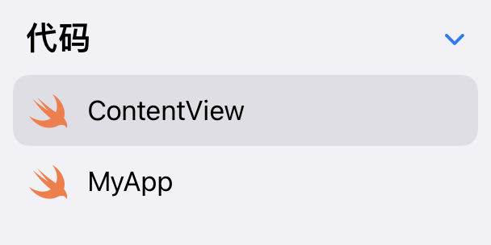

Hello World
Info
目前（2022 年 1 月）主流的 iOS 开发使用 Xcode 项目（Xcode project）进行，本文为了支持 iPadOS 平台并简化说明，使用最新的由 Swift Package Manager 管理的项目格式，此格式在 13.2 以上版本的 Xcode 上同样支持。实际开发时建议使用更加完善的 Xcode project。
创建项目¶
Swift Playgrounds（iPad）¶
在 Swift Playgrounds（4.0 以上版本）中，选择底部的 App。
Xcode Swift Playground App¶
在 Xcode（13.2 以上版本）中，选择 File > New > Project 中的 Swift Playground App。
Xcode Project¶
传统的 Xcode project，部分内容与 Swift Playground App 不同。
打开 Xcode，点击 Create a new Xcode project，选择 iOS 栏下的 App。在项目的配置界面，配置：
- Product Name：应用名称
- Team：开发使用的 Apple ID，可以为
None - Organization Identifier：一个逆序的 DNS 名，如果不考虑上架可以任意
- Interface：选择
SwiftUI - Language：
Swift - Use Core Data 和 Include Tests：本教程不涉及，可以不选
其余步骤按照默认配置即可。
Hello, world!¶
使用 Swift Playgrounds 创建项目并进入后，可以看到左侧的源代码和右侧的实时预览：

实时预览是真实运行的 app，可以很方便地进行开发、调试。
打开侧边栏，可以浏览项目文件目录：

这两个文件，就是一个完整的可运行的 Hello World 程序。MyApp.swift 中的内容在本教程中不涉及，可以参考 后续拓展 中的“SwiftUI 生命周期”。
深入 Hello World¶
接下来，我们通过这个 Hello World 程序，快速地介绍 SwiftUI 构建 UI 的基本概念，以及与 SwiftUI 有关的一些 Swift 语法。
这是我们之前看到的 ContentView.swift：
1 2 3 4 5 6 7 8 9 10 11 12 | |
因为要用到 SwiftUI 框架，在文件的开头需要 import SwiftUI，之后 SwiftUI 中所有的符号均可直接使用。
在我们的 App 中，上面的 ContentView 是唯一的 View（在 MyApp.swift 中可以看到这一点），其 View 由垂直排列（VStack）的两个 View（Image 和 Text）构成。如果你点击运行，App 的所有内容就是 ContentView。
在 SwiftUI 中，所有 UI，无论是一整个页面，还是单独的组件，都是一个 View。我们通过组合不同的 View 来构建 UI。定义一个 View 需要：
- 定义一个遵循
View协议的struct - 在
struct定义一个名称为body，类型为some View的计算变量（View协议的规定）
我们要做的，就是在 body 中描述我们的 UI。我们将在下一节展开如何构建 UI 的话题，我们先关注其中的语法。
body 的类型：some View¶
1 2 3 4 5 6 7 8 9 10 | |
body 是一个类型为 some View 的计算变量。some 的含义是：“这个类型遵循 View 这个协议，但我不方便写出这个类型，需要编译器来确定它的类型”。也就是说，body 实际上是有一个确定的类型的，只不过我们不显式地写出来。这是一种叫做 opaque return type 的语法。
Note
你可以在下文中的《body 的具体类型》看到为什么“不方便写出这个类型”。
这也告诉我们，我们定义 View，实际上就是是返回另一个 View。你没有办法在不利用已有 View 的情况下凭空生成一个 View。
关于 View 中的 associatedtype
View 的定义中有一个遵循 View、名为 Body 的 associatedtype，并且 body 的类型实际上就是这个 Body：
1 2 3 4 | |
注意到我们没有显式地指出 Body。实际上，Body 是这样确定的：
- 编译器根据
body的表达式推断出body的类型（某个遵循View协议的具体类型） - 因为
body的类型是Body，那么推断出Body就是在 1 中推断出的类型
你可以从中看到 some 不可或缺的作用。
为什么不能以 View 作为类型
如果你把 some View 改成 View，会出现编译错误：
1 | |
protocol 在有 associatedtype 限制时不能够作为类型。因此，我们需要提供一个确定的、遵循 View 的类型。
View modifier：修饰 View¶
1 2 3 4 5 6 7 8 9 10 | |
单独的两行 .imageScale(.large) 和 .foregroundColor(.accentColor) 看起来很奇怪，实际上很好理解。Image 遵循 View，而 imageScale 和 foregroundColor 是 View 的成员函数，原来的代码相当于：
1 | |
打开文档，查看 .imageScale(_:) 的函数签名：
1 2 3 4 | |
我们可以看到，函数的返回值是 some View。也就是说，我们将原来的 View（即 Image）转换为了另一个 View，这个 View 的图标大小设置为 .large。
这种函数叫做 view modifier，也就是向原来的 View 进行一定的修饰，然后返回修饰后的 View。
这实际上是一种函数式编程。它的好处是显而易见的，比如，如上面的例子，我们可以给一个 View 连续添加 modifier：
1 2 3 | |
每次添加 modifier，这个表达式的类型依然是某种 View，而形式上看上去就像是不断给 Image 加上不同的样式一样。
查看文档的几种方式
- Swift Playgrounds
- 点击导航栏的
(...) > 文档，可以浏览所有文档 - 在任意符号上（变量、函数、类型、协议等）鼠标右键点击（或触摸点击），选择
帮助，可以快速查看该符号相关文档
- 点击导航栏的
- Xcode
- 按 Cmd+Shift+0 可以打开并浏览所有的开发者文档。
- 在任意符号上，按住 Option 并点击该符号，可以快速查看文档
- 网页版文档：https://developer.apple.com/documentation/technologies
关于 View Modifier 与 View 的值类型
struct 是值类型，每次添加 modifier 都会生成一个新的副本，并不会改变原来的 View。例如：
1 2 | |
view1 并不会添加 padding。Modifier 是完全没有副作用的。
body 的具体类型
值得注意的是，每次添加 modifier，body 的实际类型都会发生改变：
1 2 3 4 5 6 7 8 9 10 11 12 13 14 | |
这里 _EnvironmentKeyWritingModifier 是 SwiftUI 内置的私有类型，对外不可见。容易指出，ModifiedContent 遵循 View。
如何查看 View 的类型
你可以用 Swift 的命令行工具进行快速的实验：
1 2 3 4 5 | |
某些版本的命令行工具并不能正确显示类型，如：
1 | |
你可以使用 String(describing:) 来查看：
1 2 | |
这就解释了为什么我们为什么需要写 some View，而不是直接给出最后的类型。body 实际的类型往往非常复杂：一个 View 可能是由另外一个或多个 View 通过某种方式构成的，而且这种构成往往使用模版完成，正如 ModifiedContent<Image, _EnvironmentKeyWritingModifier<Scale>> 显示的那样。
而且，在我们组建 View 的时候，我们写的 View 的类型是不断变化的，我们不可能随着我们写代码而不断变化的 View 而不断地修改类型。这件事交由编译器完成再合适不过——Swift 具有自动类型推断，编译器根据 var body 中的表达式就可以确定 body 的类型。
当然，你不必对这个话题过于费心，你只需要保证 body 中返回的是一个 View 即可，剩下的工作就交给编译器吧。
HTML？¶
1 2 3 4 5 6 7 8 9 10 | |
Hello World 程序中还有一个令人迷惑的地方：VStack 的构造函数中的内容看上去就像 HTML 一样，结构非常直观，但并不像是一般的 Swift 语言。实际上，这的确是类型安全、静态类型的 Swift 语言，而且这种语法就是为了 SwiftUI 而设计的。这个问题，我们留到 构建 View 中介绍。